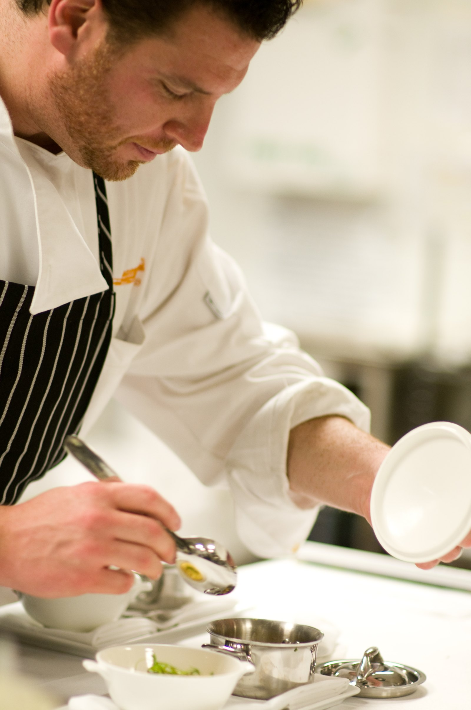

Sans JavaScript, tous les onglets restent visibles à la suite.
Présentation de la séquence

In Context
Notice, save, argue
Answer the key question in a short talk: can one worker really make a difference for the planet?
Can one worker really make a difference for the planet?
Un seul professionnel peut-il vraiment changer quelque chose pour la planète ?
In Millet's painting, three women pick up the grain left on the field after the harvest. Nothing is wasted. The sequence starts here: what do workers keep, save or throw away today?
Anglais · Seconde professionnelle · baccalauréat professionnel · LVA, de A2 vers B1. Each lesson lasts 55 minutes, timed on 52 minutes. Themes of the official programme: Vie quotidienne, personnelle, sociale et citoyenne · Vie professionnelle.
Final task · Summative assessment
My Green Idea: a 45 to 60 second pitch to a manager about one green change in a workplace of your field (real or invented), followed by one question from the manager, and a short email (60 to 80 words) to the same manager.
Lessons at a glance
| Lesson | Question of the lesson | Language |
|---|---|---|
| 1. What a Waste! | Why does a professional kitchen weigh its rubbish? | Countable and uncountable nouns: much, many, a lot of |
| 2. Power Down | What can you switch off at work, and who decides? | Imperatives, should and could |
| 3. Every Drop Counts | Can doing less be a way of doing something? | Comparatives and superlatives |
| 4. Fix It, Don't Bin It | Why repair something when a new one is easy to buy? | Present perfect and past simple |
| 5. Who Decides? | Is going green the job of the boss, the worker or the customer? | Giving an opinion; will and might |
| 6. My Green Idea | Can one worker really make a difference for the planet? | Revision: the language of the sequence |
Each lesson practises CE, CO, PE, PO and PI. Assessments (diagnostic, mid-sequence, summative) and their grids stay in Teacher version, so that students do not see the papers in advance. The only exception is the file for the student who cannot come to class or who is hospitalised: the teacher gives it privately.
Méthode de la spirale conçue par Madame Carole Paoli Pompougnac · Spirale de Gorse.
Note pour le CFA et le BP
This sequence is written for Seconde professionnelle (baccalauréat professionnel). It can also be used in a CFA or for a brevet professionnel.
Apprentices in a CFA or a BP already work in a company, in alternance. In that wording, speak of their workplace and of their employer. Never use the word PFMP: PFMP is for the baccalauréat professionnel only.
In the dialogues, you may say apprentice or new colleague rather than a trainee who comes from school.
© 2026 Madame Carole Paoli Pompougnac · CC BY-NC-SA 4.0
Teacher’s notes : la séquence en un coup d'œil
| Item | Content |
|---|---|
| Level | Seconde professionnelle, toutes spécialités, Anglais LVA, de A2 vers B1. |
| Length | 6 lessons of 55 minutes, timed on 52 minutes. |
| Key question | Can one worker really make a difference for the planet? |
| Final task | A 45 to 60 second pitch and a 60 to 80 word email to a manager. |
| Grammar | Much, many, a lot of; imperatives, should, could; comparatives; present perfect and past simple; will and might. Presented as Étude de la langue, in paliers. |
| Assessments | Diagnostic (lesson 1, 10 minutes, not graded). Mid-sequence (lesson 4, 14 minutes, out of 20). Summative (lesson 6): written part out of 20 and oral part out of 20. Subjects, grids and keys appear only in Teacher version. |
| Differentiation | Level 1 and Level 2 have the same objective. Dys-friendly version. A version for the student who cannot come to class or who is hospitalisé, to be given privately if it includes an evaluation. |
| Official programme | Arrêté du 3 avril 2019, BO spécial n° 5 du 11 avril 2019, en vigueur. Volume horaire annuel de référence en LVA, Seconde bac pro : 60 h (Éduscol). |
Materials: a projector or an interactive whiteboard (or the printed sheets), the student sheets, the dys version, sign or role cards. No phones needed.
Personal expression: students may tell the truth, transform it or invent. Nobody has to share their private life.
Note pour le CFA et le BP
This sequence is written for Seconde professionnelle (baccalauréat professionnel). It can also be used in a CFA or for a brevet professionnel.
Apprentices in a CFA or a BP already work in a company, in alternance. In that wording, speak of their workplace and of their employer. Never use the word PFMP: PFMP is for the baccalauréat professionnel only.
In the dialogues, you may say apprentice or new colleague rather than a trainee who comes from school.
Méthode de la spirale conçue par Madame Carole Paoli Pompougnac
© 2026 Madame Carole Paoli Pompougnac · CC BY-NC-SA 4.0
Lesson 1 · What a Waste!
Question of the lesson: Why does a professional kitchen weigh its rubbish?
The five language activities of the lesson
- CEReading comprehension16 to 23: five facts from WRAP on food waste in British restaurants, hotels and canteens.
- COListening comprehension23 to 31: The Three Bins, a head chef explains the kitchen bins to a new worker. Two listenings.
- PEWritingDiagnostic test (Teacher version); written record; homework.
- POSpeaking in continuous speechHook: one sentence about the photo; speaking round: In my future job, I could waste less... by...
- PIOral interaction37 to 43: in pairs, ask and answer about the bins in your workshop.
Spirale de Gorse
Méthode conçue par Madame Carole Paoli Pompougnac. Le nom rend hommage à sa grand-mère par alliance, Madame Armandine Gorse, avec un S. On gravit un texte, un audio ou une image comme une pente : chaque tour est une prise plus haute. On part de ce qui saute aux yeux, puis l'attention se resserre, jusqu'à la pointe, le sommet où l'essentiel se laisse voir. Quatre tours, puis la pointe. À appliquer, dans chaque lesson, au document principal (texte, image ou audio). Les réponses détaillées restent en Teacher version.

Je remarque (I notice)
Ce qui saute aux yeux, la première impression.
I notice… / This is about…
Je repère (I spot)
Un détail, un passage, un élément plus net.
I spot… / The key word is…
Je comprends (I understand)
Ce que ces éléments permettent de comprendre.
This shows that… / They have in common…
J'anticipe (I anticipate)
La visée du texte, ce qu'il faut en faire.
The text wants me to… / I anticipate…
Je trouve le sens (I find the meaning)
La pointe, le point final : l'essentiel que l'on peut défendre, et sa limite. Ce point final cadre et recentre la démarche. Il évite le hors-sujet et les conclusions hâtives qui fausseraient l'analyse du texte. On peut finir par une brève ouverture sur un autre débat.
The point is… / I keep to the text: … / I stay focused on… / Beyond this, other questions may arise and open up further exploration.
For students
Today you will: read facts about food waste, listen to a head chef, use much, many and a lot of, and write a first record of what a kitchen can measure and change.

Hook: look at the photo for one minute. What jumps out at you? Start with: I can see... / There is... / There are...
Lesson plan (55 minutes, timed on 52 minutes)
| Minutes | Activity |
|---|---|
| 0 to 3 | Entry ritual: date and today's question in the carnet de routes. |
| 3 to 6 | Hook: the photo. One sentence each. Three key words: waste, bin, food. |
| 6 to 16 | Diagnostic test (not graded). See the Évaluations tab, Teacher version. |
| 16 to 23 | Reading: five facts from WRAP. Level 1 or Level 2. |
| 23 to 31 | Listening: The Three Bins, twice, then two students read the dialogue aloud. |
| 31 to 37 | Étude de la langue: much, many, a lot of. |
| 37 to 43 | Speaking in pairs: my workshop bins. |
| 43 to 44 | Stop point. If you are late, go to the Plan B. |
| 44 to 48 | Written record. |
| 48 to 50 | Speaking round: In my future job, I could waste less... by... |
| 50 to 52 | Copy the homework. Exit row by row. |
Stopping point (minute 44)
If the class is behind, project the Plan B: it gives the key points, the rule, the written record and the homework in 8 minutes.
1. Hook
Project the photo. Each student says one sentence: I can see... / There is...
2. Reading: Facts from WRAP
- In the United Kingdom, restaurants, hotels, pubs and canteens throw away 1.1 million tonnes of food every year.
- 75% of this food could have been eaten.
- This waste costs businesses and organisations £3.2 billion.
- Almost one fifth of the food bought by the sector ends up in the bin.
- Where does the waste come from? 21% from spoilage (food goes bad), 45% from preparation in the kitchen, 34% from plates (customers leave it).
Source: facts from WRAP, press releases of 4 November 2024 (Guardians of Grub) and notes to editors of the Stand Up For Food campaign. Text written for the class from these figures.
Level 1. Match the number and its meaning: (a) 1.1 million tonnes (b) 75% (c) £3.2 billion (d) one fifth (e) 34% · 1. the cost of the waste 2. the food left on plates 3. the food thrown away every year 4. the food that could have been eaten 5. the part of the food bought that ends up in the bin.
Level 2. Q1. Which places are in the sector? Q2. Can most of this food be eaten? Prove it. Q3. Where does most of the waste come from? Q4. In your opinion, which part is the easiest to reduce? Why?
Corrigé (prof), Facts from WRAP. Level 1: a-3, b-4, c-1, d-5, e-2. Level 2: Q1 Restaurants, hotels, pubs and canteens. Q2 Yes: 75% of this food could have been eaten. Q3 From preparation in the kitchen (45%). Q4 Personal answer, for example plate waste, because the kitchen can serve smaller portions.
3. Listening: The Three Bins
A restaurant kitchen in Bristol, 8 a.m. Maria is the head chef. Tom is a new worker. The teacher reads the dialogue twice (or two students later read it aloud). The situation is invented; the job is real.
Maria: Morning, Tom. Before you start, come and see the bins.
Tom: The bins? I thought I was going to cook today!
Maria: You are. But in this kitchen, we weigh our waste every evening. Look: three bins. The blue one is for cardboard and plastic. The green one is for food waste. The black one is for everything else.
Tom: Why do you weigh the food waste?
Maria: Because what you measure, you can change. Last month we threw away about forty kilos of bread.
Tom: Forty kilos! How much bread do we buy?
Maria: Too much. So now we bake less, and we freeze the bread we don't use.
Tom: And the peelings? There are a lot of carrot and potato peelings.
Maria: They go in the green bin. A local farm collects it for compost.
Tom: How many customers do we serve a day?
Maria: About a hundred and twenty. If each plate comes back half full, that's a lot of waste. So we serve smaller portions, and customers can ask for more.
Tom: That's clever. And it's cheaper for you.
Maria: Exactly. Good for the planet, good for the business. Right, gloves on. Let's cook.
Level 1, true or false. 1. Maria is a new worker. 2. The green bin is for food waste. 3. They threw away forty kilos of bread last month. 4. A local farm collects the peelings. 5. The restaurant serves bigger portions now.
Level 2. Q1. Why does Maria weigh the food waste? Q2. What did the kitchen change for the bread? Q3. Why is the new idea good for the business?
Corrigé (prof), The Three Bins. Level 1: 1 F (Maria is the head chef; Tom is the new worker). 2 T. 3 T. 4 T. 5 F (they serve smaller portions; customers can ask for more). Level 2: Q1 Because what you measure, you can change. Q2 They bake less and freeze the bread they don't use. Q3 It is cheaper / good for the business.
4. Speaking in pairs: my workshop bins
Student A asks, student B answers, then swap. Level 1: use the starters. Level 2: no starters, add one idea for change.
- How many bins are there in your workshop? There are... bins.
- What do you throw away? We throw away a lot of...
- How much paper do you use? We use a lot of / not much...
Written record
Copy and complete in your exercise book.
In the UK, restaurants and canteens throw away 1.1 million ______ of food every year, and 75% of it could have been ______. In Maria's kitchen, the staff ______ the waste every evening, because what you measure, you can ______. We use many with ______ nouns and much with ______ nouns.
Word bank: tonnes · eaten · weigh · change · countable · uncountable
Corrigé (prof), written record. tonnes, eaten, weigh, change, countable, uncountable.
Plan B
8 minutes. Every student leaves with a written trace of the lesson.
Today's question: Why does a professional kitchen weigh its rubbish?
- What you measure, you can change.
- Three bins: blue (cardboard and plastic), green (food waste), black (everything else).
- We use many with countable nouns and much with uncountable nouns. A lot of works with both, often in positive sentences.
Then copy the written record and the homework.
Homework
Write 3 sentences about a kitchen or a workshop you know (or invent one): one with many, one with much, one with a lot of. Make four flashcards from today's words.
Corrigé (prof), homework, three sentences. Model: There aren't many bins in my uncle's garage. He doesn't recycle much plastic. He throws away a lot of cardboard boxes. Check: many + plural noun, much + uncountable noun, a lot of in positive sentences.
Récapituler la séance
Compulsory and marked, out of 4. A short recap of today's lesson, to be handed in.
- How much food do British restaurants, hotels, pubs and canteens throw away every year?
- Why does Maria weigh the waste in her kitchen?
- Complete: We don't use ___ plastic. There aren't ___ bins.
- Write one sentence with a lot of about a workplace you know or invent.
Corrigé (prof), Recapitulate lesson 1. 1. 1.1 million tonnes a year. 2. Because what you measure, you can change. 3. much; many. 4. Accept any accurate sentence with a lot of + a workplace noun.
Étude de la langue · countable and uncountable nouns: much, many, a lot of
Palier 1. The two kinds of noun
Many goes with countable nouns (bins, customers, boxes). Much goes with uncountable nouns (bread, plastic, waste, money). A lot of works with both, and is frequent in positive sentences.
Complete: There aren't ___ bins. We don't use ___ plastic. There is ___ cardboard in the blue bin.
Corrigé (prof), palier 1. many; much; a lot of.
Palier 2. Questions and negatives
How many + countable: How many customers do we serve? How much + uncountable: How much bread do we buy?
Write two questions, one with how many and one with how much, about a workplace.
Corrigé (prof), palier 2. Example: How many bins are there? How much paper do you use?
Palier 3. Write about your workshop
Write three sentences: one with many, one with much, one with a lot of, about a kitchen or workshop you know or invent.
Corrigé (prof), palier 3. See the homework model: many + plural, much + uncountable, a lot of in a positive sentence.
French corner
waste = les déchets · a bin = une poubelle · peelings = les épluchures · to weigh = peser · a tonne = une tonne · leftover = ce qui reste.
Dys-friendly version
One step at a time. A corrected example comes first.
Step 1. Read fact 1 only. What number do you see? Example: 1.1 million tonnes.
Step 2. Listen for the colours of the bins: blue, green, black.
Step 3. Complete with the word bank: many / much / a lot of.
Font buttons are at the top of this tab. You may also use the dys workbook in large print.
If a student cannot attend class or is in hospital
Work alone, in the infinitive. One task at a time. Hand in the written record, the recap homework, and any exercise marked compulsory.
- Look at Millet's Gleaners or the kitchen photo. Write two sentences: I can see...
- Read the five WRAP facts. Answer Level 1 or Level 2 in writing.
- Read the dialogue The Three Bins (your teacher may also send a recording). Answer the questions.
- Copy the written record and complete the gaps.
- Do the homework and « Récapituler la séance ».
If there is a diagnostic test in this lesson, your teacher will give it to you privately.
Answer key and grids
Keys are under the Show the key buttons in this lesson. The diagnostic test, its grid and its script are in the Évaluations tab (Teacher version only).
© 2026 Madame Carole Paoli Pompougnac · CC BY-NC-SA 4.0
Lesson 2 · Power Down
Question of the lesson: What can you switch off at work, and who decides?
The five language activities of the lesson
- CEReading comprehensionA workplace notice: Before you leave, six instructions in a hair salon.
- COListening comprehensionThe Light Bulbs: an electrician advises a shop owner in Leeds.
- PEWritingWrite a short workshop notice with five instructions.
- POSpeaking in continuous speechSpeaking round: At work, you should...
- PIOral interactionIn pairs, give advice about what to switch off in a workplace.
Spirale de Gorse
Méthode conçue par Madame Carole Paoli Pompougnac. Le nom rend hommage à sa grand-mère par alliance, Madame Armandine Gorse, avec un S. On gravit un texte, un audio ou une image comme une pente : chaque tour est une prise plus haute. On part de ce qui saute aux yeux, puis l'attention se resserre, jusqu'à la pointe, le sommet où l'essentiel se laisse voir. Quatre tours, puis la pointe. À appliquer, dans chaque lesson, au document principal (texte, image ou audio). Les réponses détaillées restent en Teacher version.
Je remarque (I notice)
Ce qui saute aux yeux, la première impression.
I notice… / This is about…
Je repère (I spot)
Un détail, un passage, un élément plus net.
I spot… / The key word is…
Je comprends (I understand)
Ce que ces éléments permettent de comprendre.
This shows that… / They have in common…
J'anticipe (I anticipate)
La visée du texte, ce qu'il faut en faire.
The text wants me to… / I anticipate…
Je trouve le sens (I find the meaning)
La pointe, le point final : l'essentiel que l'on peut défendre, et sa limite. Ce point final cadre et recentre la démarche. Il évite le hors-sujet et les conclusions hâtives qui fausseraient l'analyse du texte. On peut finir par une brève ouverture sur un autre débat.
The point is… / I keep to the text: … / I stay focused on… / Beyond this, other questions may arise and open up further exploration.
For students
Today you will: read a salon notice, listen to an electrician, give instructions with the imperative, and give advice with should and could.
Lesson plan (55 minutes, timed on 52 minutes)
| Minutes | Activity |
|---|---|
| 0 to 3 | Entry ritual and homework check: many / much / a lot of. |
| 3 to 6 | Flash quiz on lesson 1. |
| 6 to 16 | Reading: the salon notice Before You Leave. |
| 16 to 26 | Listening: The Light Bulbs, twice. |
| 26 to 34 | Étude de la langue: imperatives, should, could. |
| 34 to 43 | Writing and speaking: a workshop notice; advice in pairs. |
| 43 to 44 | Stop point. |
| 44 to 48 | Written record. |
| 48 to 50 | Speaking round: At work, you should... |
| 50 to 52 | Homework and exit. |
Link to the problem: the owner pays the bill, the electrician advises, each employee switches off. Leave the question open for lesson 5.
1. Reading: Before You Leave
BEFORE YOU LEAVE
- Switch off the hairdryers and unplug the straighteners.
- Turn off the lights in the back room.
- Don't leave the computer on standby. Shut it down.
- Close the door to keep the heat in.
- Turn the heating down before you lock up.
- Report a dripping tap to the manager.
Small actions, big savings. Thank you!
Source: notice written for the class. The salon is invented.
Level 1. Match the instruction (1 to 6) and the word: (a) heating (b) tap (c) hairdryers (d) door (e) computer (f) lights.
Level 2. Why close the door? What must you not leave on standby? Who do you tell about a dripping tap?
Corrigé (prof), the notice. Level 1: 1-c, 2-f, 3-e, 4-d, 5-a, 6-b. Level 2: To keep the heat in; the computer; the manager.
2. Listening: The Light Bulbs
A corner shop in Leeds, 10 a.m. Mrs Patel owns the shop. Sam Turner is an electrician. The situation is invented; the job is real.
Mrs Patel: Hello, are you the electrician?
Sam: Yes, Sam Turner. You called about the lights?
Mrs Patel: Yes. My electricity bill is enormous. The lights are on from six in the morning to eleven at night.
Sam: I see. These are old fluorescent tubes. You should replace them with LED lights. They use much less energy and they last longer.
Mrs Patel: Are they expensive?
Sam: They cost more to buy, but you'll pay less on your bill.
Mrs Patel: And the fridges? They're always humming.
Sam: The fridges must stay on, of course. But you shouldn't put them next to the radiator. Move this one a little, and clean the back of it. Dust makes it work harder.
Mrs Patel: Really? I didn't know that.
Sam: And the sign outside? Is it on all night?
Mrs Patel: Yes, so people can see the shop.
Sam: You could put it on a timer. It switches off at midnight and on again at six.
Mrs Patel: That's a good idea. Can you do it today?
Sam: Yes, I can. Please switch off the main power for me, and I'll start.
Corrigé (prof), The Light Bulbs. Sam is an electrician; Mrs Patel owns the shop. Advice: replace fluorescent tubes with LED lights; don't put fridges next to the radiator; clean the back; put the outdoor sign on a timer. The fridges must stay on.
3. A workshop notice, then advice in pairs
Write five instructions for a workplace of your field. Then, in pairs, give two pieces of advice with should or could.
Written record
To give an instruction, we use the ______: Switch off the lights. ______ leave the computer on standby. To give advice, we use ______ + base verb: You should replace the tubes. For a softer suggestion, we use ______. LED lights use less ______ and last ______.
Word bank: imperative · Don't · should · could · energy · longer
Corrigé (prof), written record. imperative, Don't, should, could, energy, longer.
Plan B
Today's question: What can you switch off at work, and who decides?
- Lights, computers, heaters and machines use energy even when nobody works.
- An electrician gives advice: replace old tubes with LED lights, use a timer, clean the fridge.
- A notice gives clear instructions with the imperative.
Key words: switch off · standby · timer · heating · bill · energy. Then copy the written record.
Homework
Finish your workshop notice (5 instructions). Learn the 12 words. Next lesson starts with a flash quiz.
Corrigé (prof), workshop notice. Five clear imperatives or Don't + verb, adapted to a real or invented workplace. Example: Switch off the machines. Don't leave the taps running.
Récapituler la séance
Compulsory and marked, out of 4. A short recap of today's lesson, to be handed in.
- Write two instructions from the salon notice.
- What should Mrs Patel do with the old fluorescent tubes?
- What could she do with the sign outside?
- Write one sentence with should and one with Don't.
Corrigé (prof), Recapitulate lesson 2. 1. Accept any two from the six instructions. 2. Replace them with LED lights. 3. Put it on a timer. 4. Accept accurate sentences with should + base verb and Don't + base verb.
Étude de la langue · imperatives, should and could
Palier 1. The imperative
To give a clear instruction: Switch off the lights. Don't leave the computer on standby. The verb comes first. No subject.
Rewrite as instructions: you close the door; you do not leave the lights on.
Corrigé (prof), palier 1. Close the door. Don't leave the lights on.
Palier 2. should and shouldn't
Advice: You should replace the tubes. You shouldn't put the fridge next to the radiator. Should + base verb, no -s.
Complete: You ___ clean the back of the fridge. You ___ leave the sign on all night.
Corrigé (prof), palier 2. should; shouldn't.
Palier 3. could: a softer suggestion
You could put it on a timer. Write two suggestions with could for a workplace of your field.
Corrigé (prof), palier 3. Example: You could switch off the screen at lunchtime. You could use a timer for the sign.
French corner
to switch off = éteindre · standby = en veille · a timer = un programmateur · a bill = une facture · heating = le chauffage · a dripping tap = un robinet qui goutte.
Dys-friendly version
Step 1. In the notice, underline the verb at the beginning of each line. Example: Switch off.
Step 2. Listen for three objects: lights, fridges, the sign outside.
Step 3. Copy: You should + verb. You shouldn't + verb.
If a student cannot attend class or is in hospital
Work alone, in the infinitive. One task at a time. Hand in the written record, the recap homework, and any exercise marked compulsory.
- Read the salon notice. Match or answer the questions.
- Read the dialogue The Light Bulbs and write three pieces of advice that Sam gives.
- Write a five-line notice for a workplace of your field.
- Copy the written record. Do « Récapituler la séance ».
Answer key and grids
See the Show the key buttons in this lesson.
© 2026 Madame Carole Paoli Pompougnac · CC BY-NC-SA 4.0
Lesson 3 · Every Drop Counts
Question of the lesson: Can doing less be a way of doing something?
The five language activities of the lesson
- CEReading comprehensionFour lines by Gerard Manley Hopkins, Inversnaid (1881), read with the Spirale de Gorse.
- COListening comprehensionThe Car Wash: a mechanic explains how the garage saves water and recycles oil.
- PEWritingWrite two lines in the style of the poem; copy the station table of the spiral.
- POSpeaking in continuous speechChoral reading of the stanza; speaking round: At work, I could save... by...
- PIOral interactionIn pairs: compare two workplaces (comparatives).
Spirale de Gorse
Méthode conçue par Madame Carole Paoli Pompougnac. Le nom rend hommage à sa grand-mère par alliance, Madame Armandine Gorse, avec un S. On gravit un texte, un audio ou une image comme une pente : chaque tour est une prise plus haute. On part de ce qui saute aux yeux, puis l'attention se resserre, jusqu'à la pointe, le sommet où l'essentiel se laisse voir. Quatre tours, puis la pointe. À appliquer, dans chaque lesson, au document principal (texte, image ou audio). Les réponses détaillées restent en Teacher version.
Je remarque (I notice)
Ce qui saute aux yeux, la première impression.
I notice… / This is about…
Je repère (I spot)
Un détail, un passage, un élément plus net.
I spot… / The key word is…
Je comprends (I understand)
Ce que ces éléments permettent de comprendre.
This shows that… / They have in common…
J'anticipe (I anticipate)
La visée du texte, ce qu'il faut en faire.
The text wants me to… / I anticipate…
Je trouve le sens (I find the meaning)
La pointe, le point final : l'essentiel que l'on peut défendre, et sa limite. Ce point final cadre et recentre la démarche. Il évite le hors-sujet et les conclusions hâtives qui fausseraient l'analyse du texte. On peut finir par une brève ouverture sur un autre débat.
The point is… / I keep to the text: … / I stay focused on… / Beyond this, other questions may arise and open up further exploration.
For students
Today you will: read four lines of a poem with the Spirale de Gorse, listen to a mechanic, and use comparatives to talk about saving water at work.
Hook: a waterfall at Inversnaid, Loch Lomond. What jumps out at you? Start with: I can see... It looks... It makes me think of...
Lesson plan (55 minutes, timed on 52 minutes)
| Minutes | Activity |
|---|---|
| 0 to 3 | Homework check: verb first? should + base verb? |
| 3 to 6 | Flash quiz on lesson 2. |
| 6 to 8 | Hook: the waterfall, one sentence from five volunteers. |
| 8 to 22 | The Spirale de Gorse: Inversnaid, last stanza, climbed together then in pairs. |
| 22 to 30 | Listening: The Car Wash. |
| 30 to 40 | Étude de la langue: comparatives and superlatives; compare two workplaces. |
| 40 to 44 | Write two lines in the style of the poem. |
| 44 to 48 | Written record: the station table of the spiral. |
| 48 to 52 | Speaking round and homework. |
The poem is short and public domain (written in 1881, published in 1918). The glossary gives access; do not simplify the text. The point of the spiral is a question, not a moral: is leaving nature alone a way of acting? Méthode de la spirale conçue par Madame Carole Paoli Pompougnac.
1. Reading: Inversnaid, last stanza
Inversnaid is a small place in Scotland, near a waterfall on Loch Lomond. Gerard Manley Hopkins visited it in 1881. Public domain. Source: Wikisource.
What would the world be, once bereft
Of wet and of wildness? Let them be left,
O let them be left, wildness and wet;
Long live the weeds and the wilderness yet.
| Word | Meaning |
|---|---|
| bereft of | without, having lost |
| wet | here: water, rain, the wet places |
| wildness | nature that humans have not organised |
| weeds | wild plants, not planted by people |
| wilderness | a wild place |
Climb the Spirale de Gorse together: I notice, I spot, I understand, I anticipate, I find the meaning. Write the idea outside each turn and the line numbers inside. Méthode de la spirale conçue par Madame Carole Paoli Pompougnac.
Then write two lines in the same movement, about a workplace: What would my workshop be, once bereft / of...?
Corrigé (prof), Inversnaid. The poet asks what the world would be without water and wildness, and he wants them to be left. Example in the style of the poem: What would my garage be, once bereft / Of clean water and of light? / Let them be saved, the water and the light.
2. Listening: The Car Wash
A mechanic explains how the garage saves water and recycles oil. First listening: who, where? Second listening: how do they use less water? What happens to the oil?
Corrigé (prof), The Car Wash. A mechanic in a garage. They recycle the wash water and use less than a hose; used oil is collected and recycled, not poured away.
3. Compare two workplaces
In pairs: this workplace uses less water than that one; this idea is cheaper / more expensive / better for the planet.
Written record
Today's written record is the station table of the Spirale de Gorse: Question, Answer, Reasoning, What I learnt. Copy it in your exercise book.
Méthode de la spirale conçue par Madame Carole Paoli Pompougnac · Spirale de Gorse.
Plan B
Today's question: Can doing less be a way of doing something?
Copy the last stanza, the four words of the glossary you still need, and one comparative about water at work: Recycled water is cheaper than fresh water.
Homework
Finish the two lines in the style of the poem, and learn the comparatives of the lesson.
Corrigé (prof), two lines. Accept any two lines that follow the movement of the stanza and name water, light, waste or a workplace object.
Récapituler la séance
Compulsory and marked, out of 4. A short recap of today's lesson, to be handed in.
- Who wrote Inversnaid, and in what year?
- What does the poet want to be left?
- Complete: Recycled water is ___ (cheap) than fresh water.
- Write one sentence: At work, I could save ... by ...
Corrigé (prof), Recapitulate lesson 3. 1. Gerard Manley Hopkins, 1881. 2. Wildness and wet (water and wild nature). 3. cheaper. 4. Accept a complete sentence with could and a workplace action.
Étude de la langue · comparatives and superlatives
Palier 1. How to form them
Short adjectives: cheap, cheaper, the cheapest. Adjectives in -y: easy, easier. Long adjectives: more expensive, the most expensive. Irregular: good, better, the best; bad, worse, the worst; little, less, the least; few, fewer.
Complete: LED lights are ___ (cheap) than old tubes. This bin is the ___ (large) of the three.
Corrigé (prof), palier 1. cheaper; largest.
Palier 2. less and fewer
Less with uncountable nouns: less water, less energy. Fewer with countable nouns: fewer plastic cups, fewer boxes.
Complete: We use ___ water. We throw away ___ cups.
Corrigé (prof), palier 2. less; fewer.
Palier 3. Write two comparatives
Write one sentence with a short comparative and one with more / less / fewer, about a workplace of your field.
Corrigé (prof), palier 3. Example: A timer is cheaper than leaving the sign on. We use less water with a bucket than with a hose.
French corner
a tap = un robinet · a drain = une bouche d'évacuation · a hose = un tuyau · oil = l'huile · to save = économiser, sauver · wildness = la nature sauvage.
Dys-friendly version
Step 1. Read only the first two lines of the stanza, with the glossary.
Step 2. Listen for two words: water, oil.
Step 3. Complete: cheaper / less / fewer. Example: less water.
If a student cannot attend class or is in hospital
Work alone, in the infinitive. One task at a time. Hand in the written record, the recap homework, and any exercise marked compulsory.
- Read the last stanza of Inversnaid with the glossary. Copy it.
- Fill in a station table: Question, Answer, Reasoning, What I learnt.
- Write two lines in the same movement about a workplace.
- Do the comparative exercises and « Récapituler la séance ».
Answer key and grids
See the Show the key buttons in this lesson.
© 2026 Madame Carole Paoli Pompougnac · CC BY-NC-SA 4.0
Lesson 4 · Fix It, Don't Bin It
Question of the lesson: Why repair something when a new one is easy to buy?
The five language activities of the lesson
- CEReading comprehensionA short article: Repair Cafés and the European right to repair.
- COListening comprehensionCan You Fix It? A volunteer electrician and a visitor at a Repair Café in Brighton.
- PEWritingMid-sequence assessment (Teacher version); written record.
- POSpeaking in continuous speechSpeaking round: I have never... / I have already... / Last year, I...
- PIOral interactionIn pairs: talk about something you have repaired, or invented.
Spirale de Gorse
Méthode conçue par Madame Carole Paoli Pompougnac. Le nom rend hommage à sa grand-mère par alliance, Madame Armandine Gorse, avec un S. On gravit un texte, un audio ou une image comme une pente : chaque tour est une prise plus haute. On part de ce qui saute aux yeux, puis l'attention se resserre, jusqu'à la pointe, le sommet où l'essentiel se laisse voir. Quatre tours, puis la pointe. À appliquer, dans chaque lesson, au document principal (texte, image ou audio). Les réponses détaillées restent en Teacher version.
Je remarque (I notice)
Ce qui saute aux yeux, la première impression.
I notice… / This is about…
Je repère (I spot)
Un détail, un passage, un élément plus net.
I spot… / The key word is…
Je comprends (I understand)
Ce que ces éléments permettent de comprendre.
This shows that… / They have in common…
J'anticipe (I anticipate)
La visée du texte, ce qu'il faut en faire.
The text wants me to… / I anticipate…
Je trouve le sens (I find the meaning)
La pointe, le point final : l'essentiel que l'on peut défendre, et sa limite. Ce point final cadre et recentre la démarche. Il évite le hors-sujet et les conclusions hâtives qui fausseraient l'analyse du texte. On peut finir par une brève ouverture sur un autre débat.
The point is… / I keep to the text: … / I stay focused on… / Beyond this, other questions may arise and open up further exploration.
For students
Today you will: read about Repair Cafés and the right to repair, listen to a short dialogue, and use the present perfect and the past simple to talk about what you have repaired.
Lesson plan (55 minutes, timed on 52 minutes)
| Minutes | Activity |
|---|---|
| 0 to 3 | Entry ritual and homework check. |
| 3 to 8 | Hook: a Repair Café photo. What are these people doing? |
| 8 to 18 | Reading: Fix it, don't bin it. |
| 18 to 26 | Listening: Can You Fix It? |
| 26 to 32 | Étude de la langue: present perfect and past simple. |
| 32 to 44 | Mid-sequence assessment, 14 minutes, out of 20 (Teacher version). |
| 44 to 48 | Written record (or Plan B if the class is behind). |
| 48 to 52 | Speaking round and homework. |
Stop point, minute 44: collect the assessment, finished or not. If needed, the written record and the speaking round become the Plan B.
1. Reading: Fix it, don't bin it
Your toaster has stopped working. Your jeans have a hole. What do you do? Many people throw them away and buy new ones.
In 2009, Martine Postma had another idea. On 18 October 2009, she organised the first Repair Café at the Fijnhout Theatre in Amsterdam. Volunteers with practical skills, such as electricians, tailors and bike mechanics, repaired broken objects with their owners, for nothing.
Today, there are Repair Cafés in many countries, including the United Kingdom and France.
Laws are changing too. On 13 June 2024, the European Union adopted a directive on the right to repair. From 31 July 2026, it applies in the member states: manufacturers must repair some products, such as washing machines, fridges and phones, even after the guarantee has ended, at a reasonable price.
Repairing keeps objects in use for longer. It also needs skilled workers.
Source: text written for the class from Repair Café International, About (repaircafe.org), and European Commission, Directive (EU) 2024/1799 on the repair of goods.
Questions: Where and when was the first Repair Café? What must manufacturers do from 31 July 2026? Why does repairing also need skilled workers?
Corrigé (prof), Repair Cafés. Amsterdam, 18 October 2009, Fijnhout Theatre, organised by Martine Postma. Manufacturers must repair some products (washing machines, fridges, phones) even after the guarantee, at a reasonable price. Repairing keeps objects in use and requires people who can do the job.
2. Listening: Can You Fix It?
A Repair Café in a community hall in Brighton, Saturday morning. Lucy brings a lamp. Ahmed is a volunteer, an electrician. The situation is invented; Repair Cafés are real.
Lucy: Hello. Can you fix my lamp? It stopped working last week.
Ahmed: Let's have a look. Have you checked the bulb?
Lucy: Yes, I've changed it twice. It's not the bulb.
The teacher reads the full dialogue twice. Students note: what is broken, what Lucy has already done, what Ahmed finds.
Corrigé (prof), Can You Fix It?. The lamp stopped working last week. Lucy has already changed the bulb twice. Ahmed looks for a loose wire or a simple fault; the present perfect is used for the experience (Have you checked...? I've changed it), the past simple for last week.
3. Speaking: Have you ever repaired...?
In pairs: Have you ever repaired a bike, a garment, a phone, a tool? I have never... / I have already... / Last year, I...
Written record
Key words: to repair · broken · spare part · guarantee · volunteer · second-hand.
Rule: present perfect = experience, no date (Have you ever...?). Past simple = finished, with a date (Last week, I...).
Plan B
Today's question: Why repair something when a new one is easy to buy?
- The first Repair Café: Amsterdam, 18 October 2009.
- The European right to repair applies from 31 July 2026.
- Present perfect: I have repaired a bike. Past simple: Last year, I repaired a bike.
Homework
Read the correction of the mid-sequence assessment next lesson, with the method Taking a correction. Learn the rule: present perfect and past simple.
Récapituler la séance
Compulsory and marked, out of 4. A short recap of today's lesson, to be handed in.
- Who organised the first Repair Café, and where?
- From when must manufacturers in the European Union repair some products after the guarantee?
- Complete: I ___ (repair) a bike, but I have no date to give. Last June, I ___ (repair) a lamp.
- Why does repairing also need skilled workers?
Corrigé (prof), Recapitulate lesson 4. 1. Martine Postma, in Amsterdam, in 2009. 2. From 31 July 2026. 3. have repaired; repaired. 4. Because objects have to be taken apart and put right: the work needs people with practical skills.
Étude de la langue · present perfect and past simple
Palier 1. The two ideas
Present perfect: have / has + past participle. An experience, no precise time: I have repaired a bike. Have you ever...? With ever, never, already, yet, just.
Past simple: a finished action, with a date or last week, in 2009: She organised the first Repair Café in 2009. It stopped working last week.
Corrigé (prof), palier 1. No date, no finished time marker: present perfect. A date or last week / in 2009: past simple.
Palier 2. Complete the sentences
1. ___ you ever ___ (fix) a bike? 2. Lucy ___ (change) the bulb twice. 3. The lamp ___ (stop) last week. 4. Martine Postma ___ (organise) the first café in 2009.
Corrigé (prof), palier 2. Have / fixed (or Have you ever fixed); has changed (or 's changed); stopped; organised.
Palier 3. Write one of each
Write one sentence with the present perfect about a repair, and one with the past simple and a date. You may invent.
Corrigé (prof), palier 3. Example: I have never repaired a phone. Last year, I repaired my cousin's bike.
French corner
to repair / to fix = réparer · broken = cassé · a spare part = une pièce détachée · a guarantee = une garantie · a volunteer = un bénévole · second-hand = d'occasion.
Dys-friendly version
Step 1. Find the date 2009 and the city Amsterdam in the text. Example: the first Repair Café was in Amsterdam in 2009.
Step 2. Listen for the object: a lamp.
Step 3. have / has + participle = no date. Past simple = a date.
If there is a mid-sequence test today, your teacher will give it to you privately if you are working away from class.
If a student cannot attend class or is in hospital
Work alone, in the infinitive. One task at a time. Hand in the written record, the recap homework, and any exercise marked compulsory.
- Read the article. Answer the three questions.
- Read the start of the dialogue and write what Lucy has already done.
- Do the three paliers of Étude de la langue.
- Copy the written record. Do « Récapituler la séance ».
The mid-sequence assessment of this lesson will be given to you privately by your teacher.
Answer key and grids
Lesson keys are under Show the key. The mid-sequence paper, grid and script are in the Évaluations tab (Teacher version only).
© 2026 Madame Carole Paoli Pompougnac · CC BY-NC-SA 4.0
Lesson 5 · Who Decides?
Question of the lesson: Is going green the job of the boss, the worker or the customer?
The five language activities of the lesson
- CEReading comprehensionA staff noticeboard: three short opinions (manager, apprentice, customer).
- COListening comprehensionThree Voices: a local radio programme in Manchester.
- PEWritingA short paragraph: your opinion, a counterargument, a prediction.
- POSpeaking in continuous speechSpeaking round: In my opinion...
- PIOral interactionA short debate in groups: agree, disagree, add however or on the other hand.
Spirale de Gorse
Méthode conçue par Madame Carole Paoli Pompougnac. Le nom rend hommage à sa grand-mère par alliance, Madame Armandine Gorse, avec un S. On gravit un texte, un audio ou une image comme une pente : chaque tour est une prise plus haute. On part de ce qui saute aux yeux, puis l'attention se resserre, jusqu'à la pointe, le sommet où l'essentiel se laisse voir. Quatre tours, puis la pointe. À appliquer, dans chaque lesson, au document principal (texte, image ou audio). Les réponses détaillées restent en Teacher version.
Je remarque (I notice)
Ce qui saute aux yeux, la première impression.
I notice… / This is about…
Je repère (I spot)
Un détail, un passage, un élément plus net.
I spot… / The key word is…
Je comprends (I understand)
Ce que ces éléments permettent de comprendre.
This shows that… / They have in common…
J'anticipe (I anticipate)
La visée du texte, ce qu'il faut en faire.
The text wants me to… / I anticipate…
Je trouve le sens (I find the meaning)
La pointe, le point final : l'essentiel que l'on peut défendre, et sa limite. Ce point final cadre et recentre la démarche. Il évite le hors-sujet et les conclusions hâtives qui fausseraient l'analyse du texte. On peut finir par une brève ouverture sur un autre débat.
The point is… / I keep to the text: … / I stay focused on… / Beyond this, other questions may arise and open up further exploration.
For students
Today you will: read three opinions, listen to a radio programme, give your own opinion, agree or disagree politely, and use will and might.
Lesson plan (55 minutes, timed on 52 minutes)
| Minutes | Activity |
|---|---|
| 0 to 6 | Homework check and flash return of the mid-sequence test (Taking a correction). |
| 6 to 16 | Reading: the staff noticeboard. |
| 16 to 26 | Listening: Three Voices. |
| 26 to 34 | Étude de la langue: opinion, will and might. |
| 34 to 44 | Debate in small groups, then a short written paragraph. |
| 44 to 48 | Written record. |
| 48 to 52 | Speaking round and homework: prepare the final task. |
Stop point, minute 44. If the debate runs long, the written paragraph becomes homework; project the Plan B.
1. Reading: the staff noticeboard
GREEN WEEK: WHAT DO YOU THINK?
Karen, manager: "The company must lead. We will install bike racks and stop buying plastic cups. But I can't do everything. If staff don't sort the waste, the bins won't help."
Liam, apprentice plumber: "I agree that we should change, but I'm only an apprentice. I do what my boss says. If she gives us better tools and more time, I'll do my part."
Mrs Osei, customer: "I choose companies that respect the planet. I might pay a little more for a repair if it lasts longer. However, prices are high for everyone at the moment."
Source: opinions written for the class. The people and the company are invented.
Corrigé (prof), the noticeboard. Karen says the company must lead, but staff must sort the waste too. Liam agrees, but he needs tools and time from his boss. Mrs Osei might pay more for a longer repair, however prices are high.
2. Listening: Three Voices
A local radio programme in Manchester. The host asks three people the same question: going green at work, whose job is it?
Ben (he runs a building company): It's my job first. I decide what we buy. Next year, we'll use more recycled materials. But it might cost more at the beginning.
Priya (a student in a vocational school, training to be a hairdresser): I think everyone has a role. In our salon at school, we turn off the hairdryers between customers and we use less water for rinsing. It's small, but if everyone does it, it'll make a difference.
Mr Clarke (a customer): In my opinion, customers have a lot of power. If we choose green businesses, the others will follow.
Corrigé (prof), Three Voices. Ben: the boss decides, but it might cost more at first. Priya: everyone has a role; small actions add up (it'll make a difference). Mr Clarke: customers have power if they choose green businesses.
3. Debate, then a short paragraph
Useful phrases: In my opinion... I think that... I agree with... I disagree. I see your point, however... On the other hand... It will... It might...
Then write a short paragraph: your opinion, one counterargument, one prediction with will or might.
Written record
To give an opinion, I say: In my ______... To add a counterargument, I say: ______ or On the other hand. To make a prediction or a promise, I use ______. For something less certain, I use ______.
Word bank: opinion · however · will · might
Corrigé (prof), written record. opinion; however; will; might.
Plan B
Today's question: Is going green the job of the boss, the worker or the customer?
Copy the four opinion phrases, one sentence with will and one with might, and your own answer in one sentence.
Homework
Prepare the final task: choose a workplace of your field (real or invented) and one green idea. Fill in the preparation card: problem, idea, two advantages, one difficulty, one question you expect from the manager.
Récapituler la séance
Compulsory and marked, out of 4. A short recap of today's lesson, to be handed in.
- What will Karen's company install, and what must staff still do?
- Complete: If everyone does it, it ___ make a difference. (will, contracted form in the dialogue)
- Write one sentence with however or on the other hand.
- In your opinion, whose job is it? Write two sentences.
Corrigé (prof), Recapitulate lesson 5. 1. Bike racks; staff must sort the waste. 2. will / it'll. 3. Accept a complete counterargument with however or on the other hand. 4. A reasoned personal answer, not a single official key.
Étude de la langue · giving an opinion; will and might
Palier 1. Opinion, agree, disagree
In my opinion... / I think (that)... / I don't think (that)... Agree: I agree with... Disagree politely: I disagree. I see your point, however...
Corrigé (prof), palier 1. Students produce one opinion and one polite disagreement.
Palier 2. will and might
will = a prediction or a decision that is quite sure: We will install bike racks. might = possible, less sure: It might cost more. Negative: will not / won't; might not.
Contractions in speech: I'll, it'll, we'll, won't (rhymes with don't).
Complete: Next year, we ___ use more recycled materials. It ___ cost more at the beginning.
Corrigé (prof), palier 2. will (or we'll); might.
Palier 3. If + present, will
If staff don't sort the waste, the bins won't help. If we choose green businesses, the others will follow. Write two sentences with if + present, will, about a workplace.
Corrigé (prof), palier 3. Example: If we switch off the lights, we will pay less. If everyone does it, it will make a difference.
French corner
an opinion = un avis · to agree = être d'accord · to disagree = ne pas être d'accord · however = cependant · on the other hand = d'un autre côté · a customer = un client, une cliente.
Dys-friendly version
Step 1. Who is speaking on the noticeboard? Three names: Karen, Liam, Mrs Osei.
Step 2. Listen for the job of each radio guest: a boss, a student, a customer.
Step 3. Copy: In my opinion... I agree... However...
If a student cannot attend class or is in hospital
Work alone, in the infinitive. One task at a time. Hand in the written record, the recap homework, and any exercise marked compulsory.
- Read the three opinions. Write who wants the company to lead, who needs more time and tools, who might pay more.
- Read Three Voices. Write each speaker's answer in one sentence.
- Write your paragraph: opinion, counterargument, prediction.
- Prepare the final-task card. Do « Récapituler la séance ».
Answer key and grids
See the Show the key buttons in this lesson.
© 2026 Madame Carole Paoli Pompougnac · CC BY-NC-SA 4.0
Lesson 6 · My Green Idea
Question of the lesson: Can one worker really make a difference for the planet?
The five language activities of the lesson
- CEReading comprehensionThe Harbour Hotel: our new green plan, in the written summative paper (Teacher version).
- COListening comprehensionA voicemail from Mr Hughes, in the written summative paper (Teacher version).
- PEWritingAn email of 60 to 80 words to the manager; written record: your answer to the sequence question.
- POSpeaking in continuous speechThe pitch, 45 to 60 seconds, assessed with the oral grid (Teacher version).
- PIOral interactionOne question from the manager after the pitch.
Spirale de Gorse
Méthode conçue par Madame Carole Paoli Pompougnac. Le nom rend hommage à sa grand-mère par alliance, Madame Armandine Gorse, avec un S. On gravit un texte, un audio ou une image comme une pente : chaque tour est une prise plus haute. On part de ce qui saute aux yeux, puis l'attention se resserre, jusqu'à la pointe, le sommet où l'essentiel se laisse voir. Quatre tours, puis la pointe. À appliquer, dans chaque lesson, au document principal (texte, image ou audio). Les réponses détaillées restent en Teacher version.
Je remarque (I notice)
Ce qui saute aux yeux, la première impression.
I notice… / This is about…
Je repère (I spot)
Un détail, un passage, un élément plus net.
I spot… / The key word is…
Je comprends (I understand)
Ce que ces éléments permettent de comprendre.
This shows that… / They have in common…
J'anticipe (I anticipate)
La visée du texte, ce qu'il faut en faire.
The text wants me to… / I anticipate…
Je trouve le sens (I find the meaning)
La pointe, le point final : l'essentiel que l'on peut défendre, et sa limite. Ce point final cadre et recentre la démarche. Il évite le hors-sujet et les conclusions hâtives qui fausseraient l'analyse du texte. On peut finir par une brève ouverture sur un autre débat.
The point is… / I keep to the text: … / I stay focused on… / Beyond this, other questions may arise and open up further exploration.
For students
Today you will: do the summative written paper, then pitch your green idea to a manager for 45 to 60 seconds and answer one question. At the end, you answer the sequence question in one sentence.
The papers and the oral grid are given by the teacher. They are not shown on the student version of this page.
Lesson plan (55 minutes, timed on 52 minutes)
| Minutes | Activity |
|---|---|
| 0 to 3 | Entry ritual. Students take out their preparation card. The teacher reads the instructions of the day. |
| 3 to 6 | Warm-up: one word from the sequence, in a fast chain. |
| 6 to 12 | Summative: listening. |
| 12 to 20 | Summative: reading. |
| 20 to 30 | Summative: writing the email. |
| 30 to 47 | Final task: pitches in groups of four, 45 to 60 seconds, plus one question. The teacher assesses with the grid. |
| 47 to 48 | Stop point: students not yet assessed pitch at the start of the next lesson. |
| 48 to 50 | Speaking round: answer the sequence question in one sentence. |
| 50 to 52 | Self-assessment and the My goals box. |
Keep the written part: it must be finished. Students not assessed orally pitch first next lesson.
1. Final task: My Green Idea
Present your idea to the manager in 45 to 60 seconds. Then answer one question. Use your preparation card, but don't read it.
Level 1 plan: Good morning, Mr / Ms... / In our workshop, there is a problem: ... / My idea is to... / It will... and it will... / One difficulty is... but we could... / Can we try it for one month? Thank you.
Level 2: add a figure from the sequence (WRAP, Repair Café, right to repair) and a counterargument with however.
The written summative paper (voicemail, hotel document, email) is in the Évaluations tab, Teacher version, and in the file the teacher gives to an absent student.
Written record
Today's written record is the answer to the sequence question, written in the box at the end of the self-assessment: Can one worker really make a difference for the planet? I think... because...
Plan B
Today's question: Can one worker really make a difference for the planet?
- Workers act every day: they measure, switch off, save water, repair and sort.
- Their actions count more when the company and the customers act too.
- A good green idea at work is clear, realistic and can be tested.
Email frame: Dear Mr / Ms + name, / I am writing to... / My idea is to... / I look forward to your answer. / Kind regards,
Homework
Read the correction of the summative assessment with Taking a correction. Choose five flashcards you still need to learn.
Récapituler la séance
Compulsory and marked, out of 4. A short recap of today's lesson, to be handed in.
- What is the final oral task, and how long is the pitch?
- Name two green actions from the sequence that a worker can do.
- Complete the email frame: Dear... / I am writing to... / ... / Kind regards.
- Answer the sequence question in two sentences.
Corrigé (prof), Recapitulate lesson 6. 1. A pitch to a manager, 45 to 60 seconds, plus one question. 2. Accept any two: weigh waste, switch off, save water, repair, sort, write a notice, suggest an idea. 3. Dear Mr / Ms + name; I am writing to...; My idea is to...; I look forward to your answer; Kind regards. 4. A reasoned personal answer.
Étude de la langue · revision: the language of the sequence
Palier 1. The tools of the sequence
much / many / a lot of; imperatives, should, could; comparatives (cheaper, more expensive, less, fewer); present perfect and past simple; will, might, if + present, will.
Corrigé (prof), palier 1. Students look back at their written records and tick what they can already use.
Palier 2. Complete the sentences
1. We throw away a lot ___ paper towels. 2. You ___ switch off the lights at night. (advice) 3. Cotton towels are ___ (good) for the planet than paper ones. 4. If we ___ (try) it, we will see the difference.
Corrigé (prof), palier 2. of; should; better; try.
Palier 3. A short spoken plan
Write four lines for your pitch, using at least should or could, one comparative, and will or might.
Corrigé (prof), palier 3. Accept a short plan that uses the three required tools and stays on one green idea.
French corner
to suggest = proposer · a proposal = une proposition · to test / to try = essayer · in the long term = à long terme · to reduce = réduire · Kind regards = Cordialement.
Dys-friendly version
Step 1. On your preparation card, write only: the problem, the idea, one advantage.
Step 2. Practise the pitch once, looking at the four-line plan, then once without reading.
Step 3. After the question, answer in one sentence. Example: It will cost less in the long term.
If a student cannot attend class or is in hospital
Work alone, in the infinitive. One task at a time. Hand in the written record, the recap homework, and any exercise marked compulsory.
- Prepare the four-line plan of your pitch and write it out.
- Record the pitch (45 to 60 seconds) or write it as a spoken text, then write the answer to one manager question (How much will it cost? / Who will do it? / When can we start?).
- Write the email of 60 to 80 words when your teacher sends you the summative paper.
- Answer the sequence question in two sentences. Do « Récapituler la séance ».
The written summative paper is given privately by the teacher.
Answer key and grids
Language keys are under Show the key. The summative papers and the oral grid are in the Évaluations tab (Teacher version only).
© 2026 Madame Carole Paoli Pompougnac · CC BY-NC-SA 4.0
Évaluations, grilles et corrigés
Teacher version only. Subjects, grids and keys stay here so that students do not see the papers in advance. The only exception is the file for the student who cannot come to class or who is hospitalisé, which the teacher gives privately.
1. Diagnostic test (lesson 1, 10 minutes, not graded)
The teacher reads this voicemail twice, at a natural pace:
Hello, this is Sarah from the Station Café. Your work placement starts on Monday at nine o'clock. Please bring black trousers and comfortable shoes. Ask for Sarah at reception. See you on Monday!
CO. 1. When does the placement start? 2. What must the trainee bring? 3. Who must the trainee ask for?
CE. Read the notice: "STAFF ROOM. Please wash your cup after use. Put the milk back in the fridge. Do not leave food in the room at night. Thank you!" 4. Where is this notice? 5. What must you do with your cup? 6. Where does the milk go? 7. What is forbidden at night?
PE. Write 3 sentences: your name or a pseudonym, your field (filière), and one thing you like or don't like in your workshop.
Answer key. 1. On Monday at nine o'clock. 2. Black trousers and comfortable shoes. 3. Sarah, at reception. 4. In the staff room. 5. Wash it after use. 6. Back in the fridge. 7. Leaving food in the room. PE model: My name is Inès. I'm in the electricity course. I like working with my hands, but I don't like the noise of the drills.
| Criterion | Points |
|---|---|
| CO: 3 answers correct | 3 |
| CE: 4 answers correct | 4 |
| PE: 3 correct and understandable sentences | 3 |
How to use it: the test is not graded as a mark in the markbook. Use the score to form mixed pairs and to help each student write one objective.
2. Mid-sequence assessment (lesson 4, 14 minutes, out of 20)
CE. Read the notice. "GREEN OFFICE RULES. 1. Print only when necessary, on both sides. 2. Switch off your screen at lunchtime. 3. Use the blue bin for paper. 4. Bring your own cup: we no longer buy plastic cups. 5. Report leaks to the caretaker."
- How should you print? (1 pt)
- When should you switch off your screen? (1 pt)
- Which bin is for paper? (1 pt)
- Why bring your own cup? (1 pt)
- Who do you tell about a leak? (1 pt)
The teacher reads twice:
Hi, it's Dan from the garage. Small change for tomorrow: the new car wash is ready, so please don't use the old hose any more. The oil container is full, and the recycling company is coming at ten. And remember: switch off the compressor before you go home. Thanks!
CO. 6. What is ready? (1 pt) 7. What must you not use any more? (1 pt) 8. What time is the recycling company coming? (1 pt) 9. What must you switch off before you go home? (1 pt)
Language. 10. How ___ water do you use? (1 pt) 11. You ___ leave the lights on. (advice, negative) (1 pt) 12. Recycled water is ___ (cheap) than fresh water. (1 pt) 13. She ___ (organise) the first Repair Café in 2009. (1 pt)
PE. Write a notice of 4 instructions for your workshop to save energy, water or materials. Use 2 imperatives and 2 sentences with should. (6 pts)
Answer key. 1. Only when necessary, on both sides. 2. At lunchtime. 3. The blue bin. 4. Because the office no longer buys plastic cups. 5. The caretaker. 6. The new car wash. 7. The old hose. 8. At ten. 9. The compressor. 10. much 11. shouldn't 12. cheaper 13. organised. PE model: 1. Switch off the machines at the end of the lesson. 2. Don't leave the taps running. 3. You should sort the metal scraps. 4. You should use both sides of the paper.
| Criterion | Points |
|---|---|
| CE: 5 correct answers | 5 |
| CO: 4 correct answers | 4 |
| Language: 4 correct forms | 4 |
| PE: 4 clear instructions adapted to a workshop | 3 |
| PE: imperatives and should correct | 2 |
| PE: spelling and punctuation | 1 |
Hand back the test next lesson. Students use Taking a correction and write one goal in the My goals box.
3. Summative assessment (lesson 6): written part out of 20, oral part out of 20
The teacher reads twice:
Good morning, everyone. It's Mr Hughes. Thank you for your ideas. We received twelve proposals. The winning idea comes from the kitchen team: a garden on the roof to grow herbs and salad. We will start in April. We need two volunteers on Wednesday afternoons. Please tell me before Friday. Thanks again!
CO. 1. How many proposals did Mr Hughes receive? (1 pt) 2. Which team had the winning idea? (1 pt) 3. What is the idea? (2 pts) 4. When will they start? (1 pt) 5. What does Mr Hughes need? (1 pt)
CE. Read the document:
THE HARBOUR HOTEL: OUR NEW GREEN PLAN
From 1 March, guests can choose to keep their towels for two nights. This saves water and energy.
In the restaurant, we will serve smaller portions of chips. Guests can ask for more for nothing.
Leftover bread will go to a local food bank every evening.
We need your ideas! Write to the manager, Mr Hughes, before 20 February. The best idea will be tested for one month.
Source: document written for the class. The hotel is invented.
6. What can guests choose? Why? (2 pts) 7. What will change in the restaurant? (1 pt) 8. Where will the leftover bread go? (1 pt) 9. What is the deadline for ideas? (1 pt) 10. What will happen to the best idea? (1 pt)
PE. You work at the Harbour Hotel (reception, kitchen, maintenance or housekeeping). Write an email of 60 to 80 words to Mr Hughes with one green idea. Explain the idea, one advantage and one difficulty. (8 pts)
Answer key. 1. Twelve. 2. The kitchen team. 3. A garden on the roof to grow herbs and salad. 4. In April. 5. Two volunteers on Wednesday afternoons (tell him before Friday). 6. To keep their towels for two nights, to save water and energy. 7. Smaller portions of chips; guests can ask for more. 8. To a local food bank. 9. 20 February. 10. It will be tested for one month. PE model: Dear Mr Hughes, I am writing about the green plan. I work in housekeeping. My idea is to put small refillable bottles of soap in the bathrooms instead of plastic ones. It will reduce plastic waste and it will be cheaper in the long term. However, we will need time to refill them. We could do it during the morning cleaning. I look forward to your answer. Kind regards, Sam Leroy
| Written part | Points |
|---|---|
| CO: correct answers | 6 |
| CE: correct answers | 6 |
| PE: email format (greeting, closing) | 2 |
| PE: idea, advantage, difficulty | 3 |
| PE: grammar and vocabulary of the sequence | 2 |
| PE: spelling and punctuation | 1 |
| Oral grid (out of 20) | Points |
|---|---|
| PO: the idea is clear and adapted to the job | 4 |
| PO: advantages and a difficulty | 4 |
| PO: language of the sequence (should, will, comparatives) | 4 |
| PO: pronunciation understandable, sentence stress | 3 |
| PI: answers the manager's question | 3 |
| Speaks without reading, 45 to 60 seconds | 2 |
Question cards: How much will it cost? / Who will do it? / When can we start? / Why is it better than what we do now? / What will the customers think?
Give each student their two grids with the marks. Students write one goal for the next sequence in My goals.
Taking a correction: I read the correction calmly. I spot my mistakes and underline them. I sort them: spelling, grammar, vocabulary, meaning. I correct them in green. I learn from them: I write one rule I will remember next time.
© 2026 Madame Carole Paoli Pompougnac · CC BY-NC-SA 4.0
Dys-friendly version : mode d'emploi
Each lesson has a Dys-friendly version tab: one step at a time, a corrected example first, a larger line spacing if you choose OpenDyslexic. The same work is also in a large-print file, in PDF, docx and odt.
Level 1 and Level 2 have the same objective; only the access changes. Students may change level during the activity.
The formal evaluation papers are not in this tab. If a diagnostic, mid-sequence or summative test falls in the lesson, the teacher gives it privately when needed.
© 2026 Madame Carole Paoli Pompougnac · CC BY-NC-SA 4.0
For absent students
If a student cannot attend class or is in hospital
Work alone, in the infinitive. One task at a time. Hand in the written record, the recap homework, and any exercise marked compulsory.
Work for each lesson is in the For absent students tab of that lesson: read, listen or read the dialogue, copy the written record, do the Étude de la langue and « Récapituler la séance ».
The formal evaluation papers (diagnostic, mid-sequence, summative) are not on this public tab, so that other students do not see them in advance. The teacher gives them privately, with the large-print file prepared for the student who cannot come to class or who is hospitalisé.
© 2026 Madame Carole Paoli Pompougnac · CC BY-NC-SA 4.0
Fiches à télécharger
Each file is in large print, 16 pt or more, in PDF, docx and odt, in libre accès. No archive. The teacher sheet, evaluations, teacher corrections, and the complete absent-student file (because it includes the papers) appear only in Teacher version.
| Document | DOCX | ODT | |
|---|---|---|---|
| Teacher’s notes | DOCX | ODT | |
| Lessons 1 to 6, student version | DOCX | ODT | |
| Étude de la langue, in paliers | DOCX | ODT | |
| Dys-friendly version | DOCX | ODT | |
| Homework, Récapituler la séance | DOCX | ODT | |
| Homework, teacher corrections | DOCX | ODT | |
| Évaluations, subjects, grids and keys (teacher only) | DOCX | ODT | |
| Corrections (teacher only) | DOCX | ODT | |
| For absent students, including the evaluations to give privately | DOCX | ODT | |
| Note for CFA and BP | DOCX | ODT |
© 2026 Madame Carole Paoli Pompougnac · CC BY-NC-SA 4.0
Références
- Jean-François Millet, The Gleaners (Des glaneuses), 1857, Musée d'Orsay, Paris. Public domain. Wikimedia Commons.
- Diggler1979, Chef Scott Conant in the kitchen of his restaurant, New York, 2008, Wikimedia Commons. Public domain. File:SCARPETTA_II-1192.jpg.
- Gerard Manley Hopkins, "Inversnaid", written in 1881, published in Poems of Gerard Manley Hopkins (1918). Public domain. Wikisource.
- WRAP, press releases of 4 November 2024, Guardians of Grub and Stand Up For Food. Figures used in a text written for the class.
- Repair Café International, About, repaircafe.org. European Commission, Directive (EU) 2024/1799 on the repair of goods.
- Programme de langues vivantes des classes préparant au CAP et au baccalauréat professionnel, Arrêté du 3 avril 2019, BO spécial n° 5 du 11 avril 2019, en vigueur.
- Éduscol, programmes et ressources en langues vivantes, voie professionnelle.


Méthode de la spirale conçue par Madame Carole Paoli Pompougnac · Spirale de Gorse.
Site: itineraires-destinations.fr
© 2026 Madame Carole Paoli Pompougnac · CC BY-NC-SA 4.0